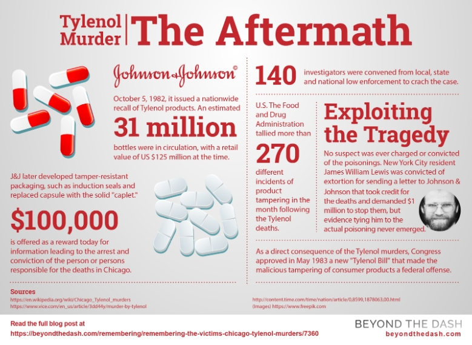
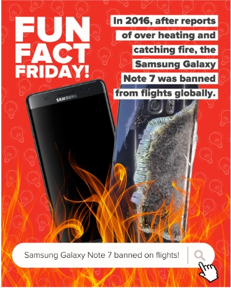
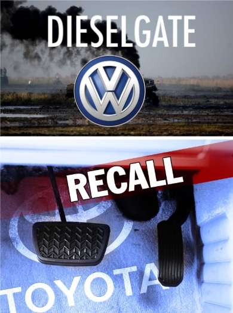

1. CSR: "Lá chắn vàng" hay "Hiệu ứng gậy ông đập lưng ông"?
Trong kinh doanh, khủng hoảng có thể đến từ những sai sót trong sản xuất, sự thiếu minh bạch, hoặc không đồng nhất với các cam kết xã hội. Lúc này, truyền thông khủng hoảng mang nhiệm vụ quản lý câu chuyện, kiểm soát thông tin và giảm thiểu thiệt hại.
Vậy CSR đứng ở đâu trong câu chuyện này?
• Halo Effect: Trước khi khủng hoảng xảy ra, một nền tảng CSR tốt sẽ đóng vai trò như "lá chắn" hoặc "bảo hiểm danh tiếng" cho doanh nghiệp.
• Backfire Effect: Ngược lại, hiệu ứng này sẽ xảy ra khi hành động gây khủng hoảng lại đi ngược hoàn toàn với những cam kết CSR mà tổ chức từng tuyên bố trước đó. CSR hiệu quả chính là công cụ hỗ trợ đắc lực trong việc giảm thiểu rủi ro và xử lý khủng hoảng.
2. Thuyết Giao tiếp Khủng hoảng Tình huống (SCCT)
Bài học đưa tụi mình làm quen với Thuyết SCCT (Situational crisis communication theory) của Tiến sĩ Timothy Coombs. 3 biến số mà một doanh nghiệp phải tự đánh giá để đo lường mức độ rủi ro khi đối mặt với khủng hoảng:
• Crisis types (Loại khủng hoảng): Đây là bước định khung xem lỗi thuộc về ai. Doanh nghiệp đang là nạn nhân (Victim crises), gặp sự cố ngoài ý muốn (Accidental crises), hay đó là một sai lầm hoàn toàn có thể ngăn chặn được (Preventable crises).
• Crisis history (Lịch sử khủng hoảng): Quá khứ của doanh nghiệp có "trong sạch" không? Nếu trước đây họ từng vướng vào những lùm xùm tương tự, sự dung túng của dư luận sẽ giảm đi đáng kể.
• Organizational reputation (Danh tiếng tổ chức): Doanh nghiệp đã xây dựng được nền tảng CSR vững chắc chưa? Một danh tiếng tốt trước đó sẽ là tấm "áo giáp" giúp họ chịu ít thiệt hại hơn.
Từ 3 yếu tố trên, thuyết SCCT rút ra một nguyên tắc bất di bất dịch: "Hành động khắc phục và lời xin lỗi tỷ lệ thuận với mức độ nghiêm trọng của lỗi/sự cố xảy ra". Nôm na là, lỗi càng nghiêm trọng, hậu quả càng lớn thì chiến dịch xin lỗi và mức độ đền bù phải càng sâu sắc, minh bạch và tốn kém.
Có 3 nhóm khủng hoảng chính:
• Nhóm nạn nhân (Victim crises): Khủng hoảng do yếu tố bên ngoài (ví dụ: ngân hàng bị hacker tấn công). Chiến lược đề xuất là tập trung vào sự đồng cảm và tính minh bạch.
• Nhóm sự cố (Accidental crises): Những sự cố ngoài ý muốn. Tổ chức cần đưa ra giải thích rõ ràng.
• Nhóm rủi ro có thể ngăn ngừa (Preventable crises): Xuất phát từ sự sơ suất của tổ chức. Cần sự khiêm tốn và tính minh bạch cao độ.
3. "Bóc Tách" 4 Chiến Lược Ứng Phó Qua Các Case Study Kinh Điển
3.1. Chiến lược Phủ nhận (Deny Strategy): Case Study Tylenol
Chiến lược phủ nhận được sử dụng khi một tổ chức bị cáo buộc mà không có căn cứ. Các hành động chính bao gồm bác bỏ thông tin, nói rõ sự thật và điều hướng dư luận.
Phân tích Case Tylenol (Johnson & Johnson): Vào tháng 10 năm 1982, Tylenol, một sản phẩm của Johnson & Johnson, vướng vào một cuộc khủng hoảng nghiêm trọng khi có người cố tình bỏ độc vào các viên thuốc, dẫn đến nhiều cái chết ở Chicago.
• Hành động của J&J: J&J đã áp dụng chiến lược này bằng cách đối diện thẳng với sự thật và thể hiện sự minh bạch. Họ đã ban hành lệnh thu hồi sản phẩm Tylenol trên toàn quốc (khoảng 31 triệu lọ) với giá trị bán lẻ ước tính khoảng 125 triệu USD vào thời điểm đó.
• Khắc phục và Điều hướng: Để giải quyết vấn đề tận gốc, J&J đã treo thưởng 100.000 USD cho ai cung cấp thông tin dẫn đến việc bắt giữ và kết án thủ phạm. Về sau, họ đã phát triển bao bì chống giả mạo và thay thế viên nang (capsule) bằng dạng viên nén (caplet). Sự việc này cũng dẫn đến việc Quốc hội Mỹ thông qua "Đạo luật Tylenol" năm 1983, biến việc giả mạo sản phẩm tiêu dùng thành tội phạm liên bang.
3.2. Chiến lược Giảm nhẹ (Diminish Strategy): Case Study Samsung
Chiến lược này nhằm giảm nhẹ mức độ nghiêm trọng của sự cố bằng cách nêu rõ bối cảnh/nguyên nhân, giải thích tình huống giảm nhẹ và đưa ra hướng khắc phục.
Phân tích Case Samsung Galaxy Note 7: Năm 2016, Samsung phải đối mặt với một cuộc khủng hoảng lớn khi có nhiều báo cáo về việc dòng điện thoại Samsung Galaxy Note 7 bị quá nhiệt và bốc cháy. Sự cố này nghiêm trọng đến mức sản phẩm bị cấm mang lên các chuyến bay trên toàn cầu.
• Ứng phó: Đây là một ví dụ điển hình của nhóm sự cố (Accidental crises), nơi rủi ro xảy ra ngoài ý muốn. Đối với nhóm này, chiến lược đề xuất là cần phải đưa ra những lời giải thích rõ ràng. Việc giảm nhẹ mức độ nghiêm trọng đòi hỏi Samsung phải xác định nguyên nhân lỗi pin và thực hiện các biện pháp khắc phục thu hồi và ngừng sản xuất để bảo vệ sự an toàn của người dùng.
3.3. Chiến lược Tái thiết (Rebuild Strategy): Case Study Volkswagen
Chiến lược tái thiết được áp dụng để khôi phục và tái thiết lập niềm tin của công chúng. Tổ chức phải nhận lỗi, đưa ra hướng bồi thường/khắc phục và tiến hành cải cách minh bạch.
Phân tích Case Dieselgate (Volkswagen): Volkswagen đã vướng vào bê bối gian lận khí thải, một cuộc khủng hoảng nghiêm trọng thuộc nhóm rủi ro có thể ngăn ngừa (Preventable crises). Đây là sự sơ suất, thậm chí là lỗi cố ý từ phía tổ chức.
• Ứng phó: SCCT chỉ ra rằng hành động khắc phục và lời xin lỗi phải tỷ lệ thuận với mức độ nghiêm trọng của sự cố. Đối với nhóm khủng hoảng này, chiến lược đòi hỏi sự khiêm tốn và tính minh bạch cao độ. Volkswagen bắt buộc phải nhận lỗi công khai, bồi thường cho khách hàng và thực hiện các cải cách sâu rộng để chứng minh sự thay đổi, nhằm lấy lại lòng tin đã mất.
3.4. Chiến lược Củng cố (Bolstering Strategy): Case Study Toyota
Chiến lược này nhằm củng cố và tăng cường danh tiếng của tổ chức bằng cách làm nổi bật các thành tựu và hoạt động CSR, thể hiện sự tôn trọng với khách hàng và nhân viên, và định vị lại tổ chức.
Phân tích Case Recall (Toyota): Toyota đã từng phải đối mặt với các đợt thu hồi xe (Recall) quy mô lớn do các lỗi kỹ thuật.
• Ứng phó: Thay vì chỉ khắc phục lỗi, Toyota đã sử dụng đợt thu hồi này như một cơ hội để thực hiện chiến lược củng cố. Việc chủ động thu hồi xe thể hiện sự tôn trọng tuyệt đối đối với sự an toàn của khách hàng. Bằng cách xử lý khủng hoảng một cách có trách nhiệm, họ không chỉ giải quyết được sự cố mà còn định vị lại hình ảnh của mình như một thương hiệu đặt lợi ích của người tiêu dùng lên hàng đầu.
Bốn case study này minh họa rõ nét nguyên lý của Thuyết SCCT: việc lựa chọn chiến lược ứng phó phải dựa trên việc phân loại đúng loại khủng hoảng và đánh giá mức độ nghiêm trọng của nó.
Điểm mạnh và hạn chế của SCCT
• Điểm mạnh: Nghiên cứu có cơ sở, Áp dụng linh hoạt, Tập trung vào danh tiếng, Tính thực tiễn cao.
• Điểm hạn chế: Nhận định của công chúng, Chưa áp dụng được với trường hợp có nhiều khủng hoảng cùng lúc, Tập trung vào truyền thông, Phụ thuộc vào dữ liệu ngay tại thời điểm khủng hoảng.


